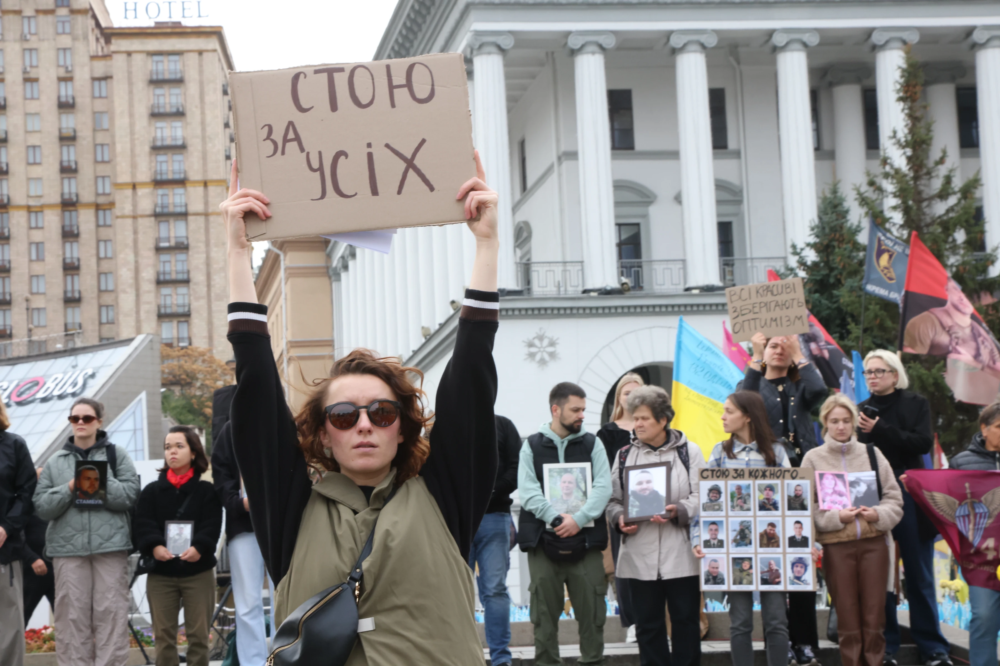

Хвилина мовчання
Хвилина мовчання – це ритуал подяки, пошани та памʼяті. Це символічна обʼєднавча дія, відкрита для залученості широкого кола суспільства, і покликана зберігати памʼять про російсько-українську війну, нашу спільну боротьбу за незалежність.

Незалежно від політичних поглядів, віросповідання, Хвилина мовчання вшановує всіх і не передбачає забарвлення певними ідеологіями, які можуть проявлятися в інших ритуалах памʼятування. Саме з цього простого і зрозумілого ритуалу почалась наша діяльність і продовжується досі. Ми щиро віримо (і вже бачимо), що Хвилина мовчання може бути підтримуючою для тих, хто втратив.
Ми пройшли довгий шлях від двох людей з картонками на Майдані до Закону України № 4783-IX (відкриється в новій вкладці), який офіційно закріпив щоденну загальнонаціональну хвилину мовчання о 9:00. Ми багато працюємо з суспільством, розповідаючи про значення та сенси цієї хвилини. Наша мета – не примусова зупинка людей на вулиці, а глибоке розуміння, для кого і чому потрібна ця мить.